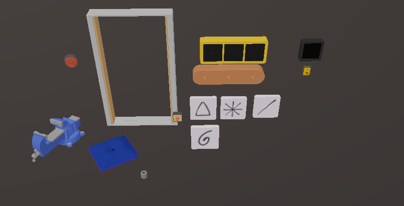

Getting started
Things to know:
- Everyone in the lobby needs the mod and the same puzzles installed
- Modded gourds can only go in the modded tower. Modded tower does not accept vanilla gourds.
- Players will see the placeholder tower (gourd holders at red tower) unless they have a modded tower installed. Players can only have one modded tower installed. Currently nothing happens when modded tower is full. (Select puzzleType: Tower in Puzzle SDK to make one) Please someone make a cool one :)
Think about while creating:
- Please make sure there is no where player can get stuck in your puzzle. Doors that can't be unlocked from the inside, a pit with no exit.. Anything that soft locks the game is no fun
- Try not to overlap with other modded puzzles (world position). It would be nice if they were all compatible with each other
- Make sure everything resets OnPuzzleStop. Some components don't automatically reset themselves when the puzzle stops.
- Support 2, 3 and 4 player lobbies. Use the
PuzzleHiderscript to hide objects per lobby size. Otherwise please say what lobby sizes your puzzle is compatible with in your description.
Setup Unity project
- Install r2modman (click the download button and download / extract the zip)
- Create profile in r2modman and install BigPuzzleSDK, UnityExplorer, NoClip, BigLanding, DayNightSettings
- Create a 6000.3.17f1 Unity project with URP
- Download BigPuzzleSDK.unitypackage and add to project
Creating first puzzle
This walks through a basic matching puzzle: a display shows three pictures, players find the matching tiles and hang them on the peg board, and the validator checks the answer.
- Create the root. Create an empty GameObject and add Puzzle SDK to it (Add Component > Big Puzzle SDK > Puzzle SDK), with Puzzle Type set to Puzzle. Put it at the top of the Hierarchy, not inside another object, and place it where the puzzle should appear in the world. The SDK treats everything under this object as one puzzle, which is how the pieces find each other without wiring.
- Add the other components. Drag these prefabs into the scene as children of the Puzzle SDK object:
- Gourd Vice: holds the gourd and releases it when the puzzle is won.
- Pillow: where the gourd goes if players won the puzzle before but lost the gourd.
- Start Switch: players flip it to start the puzzle
- Confetti: fires when the puzzle is won
- Live Signal: the lamp that shows the puzzle is running
- Door: shuts while the puzzle runs
- Add a Peg Board and a Display. Drag in a Peg Board and a Display. Select each one and set Size to 3 in the Inspector: the board gets 3 slots and the display gets 3 flaps. There's nothing to link: with one Peg Board and one Display of the same size, the board's Answer From fills itself in (slot 1 follows flap 1, and so on). The Inspector shows a green tick when it does.
- Add at least 3 Peg Tiles. Drag in three or more Peg Tiles. Select each one and change Image (and Image Set if you want another set) in the Inspector so every tile shows a different picture. When the puzzle starts, each flap on the display is dealt a different tile from these at random, and players have to hang the matching tiles on the board.
- Add a Validator. Drag in a Validator. The Peg Board finds it by itself and keeps it up to date as players hang tiles. When the answer is right and gets checked, the Validator calls
Win()for you. With a Gourd Vice that releases the gourd; with a Box, players win by picking the gourd up. - Edit position of PuzzleSDK transform. Start the game. Press
Nto fly to a position you like. PressF7, clickPlayerCharacter ...in unity explorer. Copy the position / rotation to the PuzzleSDK transform. After loading your puzzle (testing steps below), find it in unity explorer and manually adjust the numbers until its position is good. Copy the numbers to Unity. - Import low poly assets. Find low poly assets for your puzzle and import them into the Unity project, use them! Search Unity asset store, itch.io, anywhere else.
That's the whole puzzle! See Components for more things you can do.

docs/images/first-puzzle-components.pngTesting
- Click Tools > Export Puzzle. Save to your r2modman plugins folder. Should be
%appdata%\r2modmanPlus-local\BigWalk\profiles\[profile name]\BepInEx\plugins - Start the game once with your puzzle installed so the mod creates its config file, then close it
- Set
DevKeys = truein r2modman config editorBepInEx\config\markviews.BigPuzzleSDK.cfg - Press
Control + F1to teleport to your puzzle if you set a teleport Transform in PuzzleSDK - Press
Control + F2to hot reload your puzzle without restarting your game * Dev keys are disabled for everyone if someone joins with them disabled. This is to prevent accidentally pressing them while playing normally
Sharing
- Click Tools > Export Puzzle > Export For Thunderstore
- Fill in your information, export
- Upload to thunderstore. You will need to create an account and a "team"